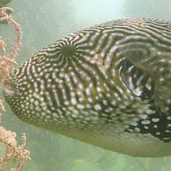
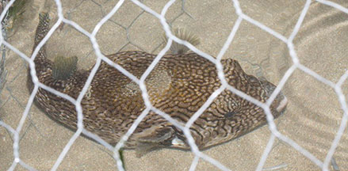
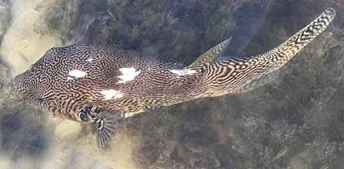
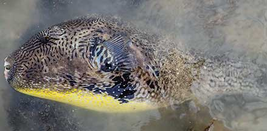

|
|
| fishes text index | photo index |
| Phylum Chordata > Subphylum Vertebrata > fishes > Family Tetraodontidae |
| Map pufferfish Arothon mappa Family Tetraodontidae updated Nov 2020 Where seen? Sometimes seen by divers. On the intertidal, sometimes seen trapped in large fish traps (bubu). Elsewhere, juveniles usually seen on muddy and estuarine shores. Adults in deeper water near coral reefs. Features: To about 60cm. Body covered with fine prickles. Body whitish covered with a dense network of black, brown or greenish broken lines. Dark and pale streaks radiating outwards from the eyes. Black reticulations below pectoral fins. Black area around anus. Juveniles (around 5cm) seen while diving were black with large yellow spots. |
 Live one, seen diving. Photo by Toh Chay Hoon from Singapore Biodiversity Records 2019:54-55 |
 Kusu Island, Aug 17 Photo shared by Marcus Ng on facebook. |
| Other sightings on Singapore shores |
 Beting Bemban Besar, May 17 Photo shared by Russel Low on facebook. |
 Found in a large fish trap Terumbu Pempang Tengah, Jun 20 Photo shared by Jonathan Tan on facebook. |
Links
References
|